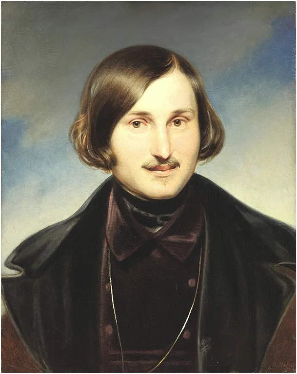
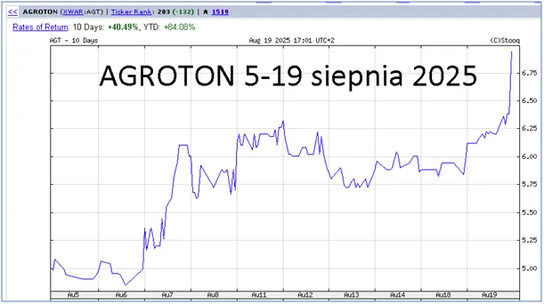
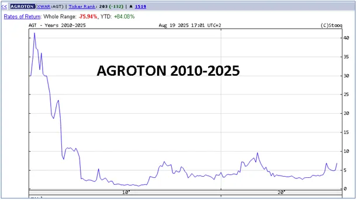
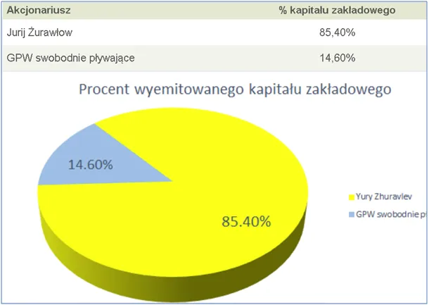

Na Ukrainie AGROTON prawdę Ci powie, ale nie zachodnie media.
Na Ukrainie AGROTON prawdę Ci powie, ale nie zachodnie media.
Gdy wiosną 2014 roku rosyjskie odziały wylądowały na ukraińskim Krymie nie wiedziałem, co o tym myśleć i wyszukałem anomalia w notowaniach na giełdzie. Największe zmiany miały spółki z Luksemburga związane z sektorem zbożowym na Ukrainie. Ukraiński czarnoziem to kilka metrów bardzo bogatej gleby z osadów pradawnych rzek, która rodzi bez nawożenia i jest odporna na brak opadów. Tania robocizna i brak jakichkolwiek norm gwarantują krociowe zyski. Ceny pszenicy spadają od wielu lat, ale na Ukrainie ten biznes się opłaca.

Pierwszy wykres to notowania największej ukraińskiej spółki zbożowo-mlecznej AGROTON na warszawskiej giełdzie w ostatnich dniach. Drugi wykres to notowania spółki od początku, czyli od 2010 roku. Biznes jest rejestrowany na Cyprze słynącym z niskich podatków.

Gdy cały świat zastanawia (zachodzi w um Kola) się, co ustalono w Waszyngtonie i kto wygrał wojnę w mediach brak na to odpowiedzi. Nagły rekordowy skok, bo aż o 16 % ceny akcji AGROTON-u dziś wiele wyjaśnia. Firma głównie operuje w obwodzie ługańskim, objętym wojną. Jak widać na wykresie drugim w Waszyngtonie ustalono, że bardziej handlujemy niż wojujemy i że ukraińskie krowy mogą puszczać gazy, bo mleko od nich jest tańsze niż od krów polskich, czy holenderskich.

Ukraina dzień przed rozmowami wysadziła gazociąg łączący Rosję z Węgrami, zupełnie nie wczuli się w dyplomatyczny klimat ostatnich dni, co zapewne skróci czas obecnych rządów w Kijowie i Warszawie.
Grafika: Nikołaj Gogol (Kola) 1809-1852
Paweł Klimczewski